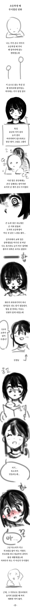

57 · 8 · 1 시간 전 · 원문

가끔 친구 잘못 만나면 흑화해서
일진 되있음
수집 당시 댓글 8개
경북 · 1 시간 전
shinoppㅡai · 1 시간 전
ㄹㅇ 흑화 하는거 많이봄
YouTubecom · 1 시간 전
귀여운 키큰 여자애가 참좋아
난코박고죽음을택하겠다 · 1 시간 전
저런애들 특) 초딩때 다 커서 고딩때만나면 키 그대로임
버거는치킨인가소인가 · 1 시간 전
빨리 8척까지 커다오
커뮤질도못하는아싸 · 1 시간 전
초딩 때 진짜 저런 애가 있었는데 진짜 좀 무서웠음. 좀 큰 누나 느낌? 그래도 좀 무섭다 뿐이지 서로 일이 있는 건 아니라 나름 잘 지냈는데, 그게 걔한텐 호감으로 보였는지 나중에 복도에서 조용히 고백 하더라. 근데 난 그게 장난인줄 알고 아무 생각 없이 고맙다 하고 친구들하고 마저 놀러갔고...
그게 내 인생 유일한 고백이었는데 ㅅㅂ...
↳ 답글 · 내가빅뱅이론 · 48 분 전
어릴 때부터 닉값을 잘 하는 개붕이었네
사타팡빈 · 45 분 전
히익
댓글
수집 당시 댓글 8개
경북 · 1 시간 전
shinoppㅡai · 1 시간 전
ㄹㅇ 흑화 하는거 많이봄
YouTubecom · 1 시간 전
귀여운 키큰 여자애가 참좋아
난코박고죽음을택하겠다 · 1 시간 전
저런애들 특) 초딩때 다 커서 고딩때만나면 키 그대로임
버거는치킨인가소인가 · 1 시간 전
빨리 8척까지 커다오
커뮤질도못하는아싸 · 1 시간 전
초딩 때 진짜 저런 애가 있었는데 진짜 좀 무서웠음. 좀 큰 누나 느낌? 그래도 좀 무섭다 뿐이지 서로 일이 있는 건 아니라 나름 잘 지냈는데, 그게 걔한텐 호감으로 보였는지 나중에 복도에서 조용히 고백 하더라. 근데 난 그게 장난인줄 알고 아무 생각 없이 고맙다 하고 친구들하고 마저 놀러갔고...
그게 내 인생 유일한 고백이었는데 ㅅㅂ...
· 내가빅뱅이론 · 48 분 전
어릴 때부터 닉값을 잘 하는 개붕이었네
사타팡빈 · 45 분 전
히익